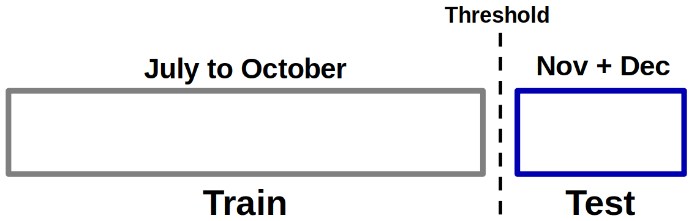
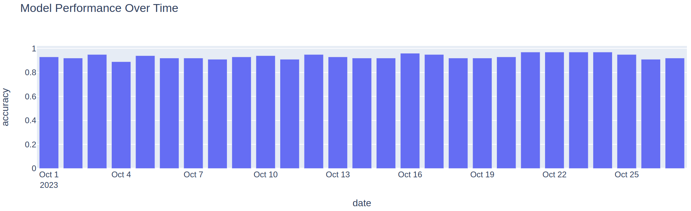
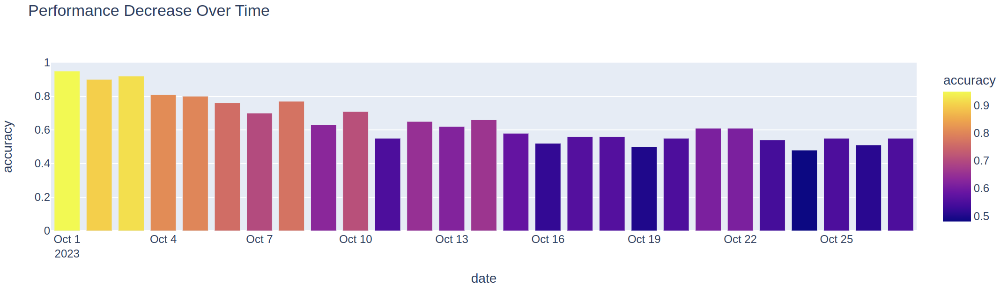

Performance Degradation
We discussed in the last topics that the model is expected to lose performance over time.
Question 1
Answer
We'll see in this handout!
Important!
The following validation workflow may be helpful when building a predictive model involving time:

Instead of randomly splitting the samples to build the training and test sets, we make a cut in time so that data before this cut belongs to the training set and data after this cut belong to the test set.
Check Degradation
To check the degradation of the model over time in advance, before the model is in production, what can be done is:
Calculate the accuracy per day (consider the time granularity used in the project) and project it in a bar graph so that the expected degradation is visible.
Attention!
This experiment represents the expected behavior based on evidence already present in the data used during model construction.
Other events may still occur (changes in user behavior) so that the model's performance degrades even more quickly.
Simulate that!
Let's simulate some data and check this idea in practice!
No degradation
In the first scenario, we will generate random data without much change in the data over time, i.e. there will be no visible significant degradation.
Import from libraries:
import pandas as pd
import numpy as np
import plotly.express as px
from sklearn.ensemble import RandomForestClassifier
from sklearn.datasets import make_classification
from sklearn.metrics import (
accuracy_score,
confusion_matrix,
ConfusionMatrixDisplay,
)
Generate random data:
# Generate a simulated dataset
X, y = make_classification(
n_samples=300*100,
n_features=10,
n_informative=5,
n_redundant=2,
random_state=42
)
start_date = pd.to_datetime("2023-01-01")
num_days = X.shape[0] // 50 # Number of days based on batch size
dates = pd.date_range(start=start_date, periods=num_days, freq="D").repeat(100)
# Create a DataFrame from the simulated data and the dates column
df = pd.DataFrame(X, columns=[f"Feature_{i}" for i in range(1, 11)])
df["Label"] = y
df["Date"] = dates[:X.shape[0]]
df.head()
filter_train = df["Date"] < "2023-10-01"
X_train = X.loc[filter_train, :]
X_test = X.loc[~filter_train, :]
y_train = y.loc[filter_train]
y_test = y.loc[~filter_train]
date_test = df.loc[~filter_train, "Date"]
clf = RandomForestClassifier(n_estimators=100, max_depth=5, random_state=42)
clf.fit(X_train, y_train)
y_pred = clf.predict(X_test)
print(f"Accuracy score: {accuracy_score(y_test, y_pred):.2f}")
df_pred = pd.DataFrame({"y_true": y_test, "y_pred": y_pred, "date": date_test})
accuracy_by_date = df_pred.groupby("date").apply(lambda x: accuracy_score(x["y_true"], x["y_pred"]))
accuracy_by_date = accuracy_by_date.reset_index()
accuracy_by_date.columns = ["date", "accuracy"]
px.bar(accuracy_by_date, x="date", y="accuracy", title="Model Performance Over Time")

With degradation
Now let's simulate a change in the data over time by adding date-dependent noise.
noise_magnitude = np.arange(1, len(X_test) + 1)/len(X_test) * 7.5
np.random.seed(1234)
noise = np.random.normal(0, noise_magnitude[:, np.newaxis], size=X_test.shape)
X_test_noise = X_test + noise
We can see that the model now loses performance as the prediction data moves further away from the training cutoff date.
y_pred_noise = clf.predict(X_test_noise)
print(f"Accuracy score: {accuracy_score(y_test, y_pred_noise):.2f}")
df_pred_noise = pd.DataFrame({"y_true": y_test, "y_pred": y_pred_noise, "date": date_test})
accuracy_by_date_noise = df_pred_noise.groupby("date").apply(lambda x: accuracy_score(x["y_true"], x["y_pred"]))
accuracy_by_date_noise = accuracy_by_date_noise.reset_index()
accuracy_by_date_noise.columns = ["date", "accuracy"]
accuracy_by_date_noise
px.bar(accuracy_by_date_noise, x="date", y="accuracy", color="accuracy", title="Performance Decrease Over Time")
Tip! 1
In this case, you would have a minimal idea of the intensity of the loss in performance of your model when it goes into production.

Question! 2
Question! 3
Answer!
Retrain the model, get more data, get more features, test new methods!
Question! 4
Answer!
Time interval at which the model is retrained.